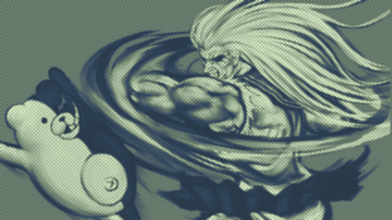

Dangan.... Ronpa?

My last few writings on here have been very formal, but my thoughts on Danganronpa are few and scattered. This will be comparatively, extremely casual, and poorly organized.
Also sorry for being lazy lately with spoiler tags, but honestly I only want to use them in cases where the bulk of the writing is not narrative critque. The gameplay section has no spoilers.
Written 10/03/26
Gameplay
Much can be said about Danganronpa: Trigger Happy Havoc.
To start with praise: the concept is novel. The Nico Nico inspired presentation, mixed with shooting mechanics, is very genius for a detective game. Unfortunately, it can be difficult to express ideas through the system and the content of the trials can be frustrating, but it is still a fun concept.
Investigations can be good, when the game allows them to be. Like many older detective games, Danganronpa can fall into the trap of having weird triggers and flags. If the player investigates every element in a room, they will often have to interact with objects again because some flag has been triggered that allows more information to be revealed. It is often rare for this to be telegraphed properly (i.e. letting the player know that they should go back to that evidence when they have more information), and in many cases the information is something the player can intuit.
The "dialogue gameplay" is mostly decent. Danganronpa attempts a "react" system in place of dialogue choices, though it did not prove itself to be better than what it was replacing and it made conversations slightly more tedious.
Outside of character writing, Danganronpa's main issue with dialogue is its pacing. Information is repeated to a disgusting extent. Part of this is a result of Danganronpa being a portable game that was originally written in Japanese, but another portion communicates a lack of trust in the player, which grows completely aggravating as the game goes on.
The balance between investigations/trials and free time events can be frustrating, especially for anyone not charmed by the writing and characters.
Chapter 2
Chapter 1 is slow and incredibly easy to solve, but it is a good introduction to what Danganronpa is and how it operates. Chapter 2 is baffling from numerous perspectives.
Gameplay
Chapter 2 sets the player free to investigate, only to shackle them to an unlikable character who does not let the player investigate on their own terms. Byakuya railroads the player and takes away any joy they could have earned from investigating. A detective game should never do anything like this in any circumstance.
Danganronpa understands that the base mystery of case 2 needed more to it, but its solution was sloppy. Byakuya is a proto-example of a "wild card" Danganronpa archetype. Super Danganronpa 2: Goodbye Despair Academy would develop this archetype into a crazed person who would uproot an investigation for some strange personal philosophy. This archetype works with characters like Komaeda, because Komaeda has little respect for his own wellbeing.
Danganronpa, though, is trying to insist that Byakuya is a genius. He is designed to be aggravating, because Byakuya is the Edgeworth of Danganronpa. For Byakuya to be a rewarding opponent, he needs to be intelligent. This does not pair well with making him a character who would interfere with a case "just to have fun," especially given the cost of losing. If the characters in Danganronpa fail the trial, they are all killed.
There is a justification provided by Danganronpa: Byakuya would have revealed what actually happened before the trial got too out of hand. That is a lazy answer that Danganronpa is only able to use because it can assume that the player will solve the case 1.
To wrap back around, this action is deeply frustrating because it is transparent how forced the red herring was, and it was at the cost of not letting the player play a detective game.
The player was forcibly removed from a location where they may have wanted to look around and talk to characters more, so they could be dragged around by Byakuya as he solves half the mystery for them, while the other half is revealed to be him tampering with evidence.
Story
Chapter 2's gameplay is insulting on every level; it would be bad in any circumstance, though it is not assisted by the case's story also being revolting.
Danganronpa has very strange views on gender. The chapter starts with Kiyotaka and Mondo forming a friendship that is centered on masculinity and masculine signifiers. When made fun of, they claim that a woman could never understand their bond. This moment is painted as a joke, but it is a statement that aligns with Danganronpa's belief system.
Sakura is the "Super High School Level Fighter", and Danganronpa uses every moment to disrespect her. She is called an ogre and a man by her classmates, she is labeled as the strongest ever, but the game is sure to tell you that her boyfriend (who her free time story revolves around) is actually stronger. Masculinity and strength are one of the same in Danganronpa's eyes, such that it must tear down the conceit of Sakura's character.
Sakura's treatment is paralleled by Chihiro. Chihiro grew up weak and isolated. In this state she became a programmer and genuinely loves the craft. Her weakness also led to her presenting as a woman, which conversely, is a negative characteristic she hopes to correct.
Chapter 2 focuses on two themes: growing to be better and gender roles. Both of these concepts are executed poorly.
Mondo fails to better himself and his guilt leads to him killing an innocent classmate. This is paralleled against Chihiro who is making steps to better herself. The parallel falls flat due to the difference between Mondo and Chihiro's failings. Mondo was overconfident and killed two people; Chihiro was bullied as a child for being feminine and weak.
In many cases, it is true that focusing on oneself is better than interacting with bullies, but on some level Danganronpa agrees with Chihiro's harassment. Danganronpa claims that Chihiro is becoming stronger to accept who she is 2, but becoming "stronger" is literal in this case. Chihiro is not accepting who she is and being happy with herself, she is accepting who she is, a man, and putting in work to align herself with the gender roles expected of her.
The moral contradictions are miniscule compared to what Chihiro represents on a wider scale.
I would like to pause and stress that I am not writing to convince you that Chihiro is canonically transgender. A character does not have to be transgender to be a transphobic caricature; bigotry is often leveraged through abstract representations of social groups. I am writing the following with the perspective that Danganronpa designed Chihiro to be a cisgender man 3.
Chihiro is not transgender, but she is written from a transmisogynist lens.
Chihiro's "true" gender is placed in parallel to a girl who is secretly a serial murder that "preys on young cute men".
Chihiro's body was found in a woman's restroom, preceded by numerous instances of Danganronpa capitalizing bathroom panic for humor 4.
Chihiro is designed to be a "trick" 5.
Chihiro's assigned gender is revealed as her corpse is sexually felt up in a room full of her classmates 6.
Sakura screams out when discovering Chihiro's assigned gender.
After Chihiro's assigned gender is revealed, all of the students start referring to Chihiro in masculine terms. This is before it is exposited that Chihiro did want to be viewed as a man 7.
All of these actions reveal that Danganronpa is uncomfortable with trans women. Trans women are painted as inherent tricks; discovering that a woman is trans is shown to be horrifying.
As a result, it is natural to question Danganronpa's intent with Chihiro. Transmisogynist stories will view trans women from two perspectives: they are degenerates, or they are confused. These perspectives are often combined, and they are in Danganronpa's case. Danganronpa uses all the iconographies of "gender deviance", but Chihiro is supposed to be a sympathetic character; so it follows that Chihiro must be confused. Chihiro is not a true deviant because she is trying to correct herself and be better.
What stands out most about Chihiro's treatment is Danganronpa's' insistance that feminine and or weak men are treated worse than trans women. One could try and argue that this is true if the trans woman perfectly passes, but Chihiro did pass perfectly, and Danganronpa still sexually harassed her and built her story and death around bathroom panic.
It can be inferred that this viewpoint came to Danganronpa because in the writers' eyes trans women are treated better than feminine men, because trans women do not exist.
A man would never want to be a woman: a man only becomes a woman once he has failed to be strong; this is an unwanted state that a man must recover himself from. Trans women do not exist, only weak and feminine men. From this line of logic comes Chihiro.
Chihiro matters when evaluating Danganronpa as a story because Danganronpa is perpetuating harmful beliefs about a marginalized group of people. Chihiro, along with Naoto from Persona 4, have become the face of online discussion around bigoted depictions of transgender people in video games, and it's very frustrating to see those conversations boiled down to if the characters are textually transgender or not.
Discussions on which characters are bigoted depictions and which are not should not be placed into the hands of the author alone. The greatest tool of any caricature, is to claim that it was never even there.
At the very least, Chihiro's treatment is especially cruel for a video game that wants to stress the importance of hope.
The Rest of it
Danganronpa slightly picks up with chapters 3 and 4.
Personally, there's very little to say about chapter 3. The idea is interesting and the trick with the discovery announcements is clever, but that's about it.
Replaying Danganronpa was an odd experience. Mysteries can gain meaning on a revisit through foreshadowing. Danganronpa, though, has very little interest in foreshadowing outside of its larger narrative.
Danganronpa is incredibly meticulous in disproving red herrings and misunderstandings, but culprits are proven comparatively halfheartedly. The slanted focus is especially odd when it is extremely apparent who the culprit is. Maybe the issue is that once the culprit becomes obvious, it's rare for new information to come up and make the reveal more exciting. This could just be a bad faith perspective coming from a dreary replay, though.
Chapter 4 was not an exciting mystery, but it may be the highpoint of Danganronpa's writing.
Byakuya in chapter 2 failed because Danganronpa was cheaply appending complexity to the murder. Chapter 4, conversely, constructed a situation where Asahina's actions made sense.
Sakura is a deeply kind person and her classmates turned their back on her and tried to kill her the moment she became suspicious. This was a tragic situation that pushed Asahina to extreme actions. This beautiful plot point sits awkwardly within Danganronpa as a whole.
Characters in Danganronpa never learn or grow. It can be annoying to listen to characters who cannot understand anything during class trials, but this attribute becomes troubling when viewing Danganronpa as a narrative.
In every case the characters plug their ears and insist an innocent person is a murderer. These actions kill Sakura in case 4 8, and case 5 plays out the exact same.
All of the characters plug their ears and insist it was Makoto's fault 9 and send him to his death. After he survives his execution 10 and reunites with his classmates, nothing is said about what just happened. None of the characters grapple with the fact that they almost killed their innocent friend.
Danganronpa can exist with a static cast, though it should probably not make a game centering around hope if that's the case.
It is foolish to view Danganronpa's story from a critical lens, but it's hard to ignore how deeply uncommitted it is to its slapped on message.
Chapter 6 ends with all of the characters rejecting despair and choosing to go out into the world with hope, even if that world is destroyed and wants to destroy them. Chapter 6 starts with all of the characters distrusting each other once again and refusing to investigate together after Monokuma manipulated them for the hundredth time. These two plot beats sit terribly next to each other, especially when they are only an hour apart.
Danganronpa is an edgy game about cruelty, the characters can be nasty to each other, but one would hope that they would grow in a meaningful way.
Let us return to Sakura, a kind hearted girl who protected her classmates around her. She did work with Monokuma, but it was obvious to everyone involved that she was being blackmailed. When she tried to speak with her classmates who rejected her and make peace, every person she met tried to kill her. She killed herself so her friends would no longer fight and kill each other. No more killings occurred after her death, but the distrust did not end.
The characters in Danganronpa were placed into a horrible situation. It is understandable why some of them turned to murder. Despite how bleak everything is, Danganronpa could tell a story about hope; many of the murders were not born out of cruelty. This exact line of logic reveals the strangest aspect of Danganronpa; the murders were committed by people who were pushed to extreme actions and were deeply remorseful, and as such: the murders are often the least cruel actions in Danganronpa.
Danganronpa is filled with vicious characters who never trust anyone and jump at any opportunity to put someone down. Sakura's story expresses a completely hopeless worldview, and the characters' lack of true growth after the fact only boldens that hopelessness.
In its final thirty minutes, Danganronpa repeats the word hope over and over again. Trust only became important once it was time to insist on the game's moral.
I spent the ending thinking about every time Asahina was sexually harassed in gross detail for a laugh. And the way all the characters treated Chihiro after her death. And how no one investigated together for the final case. And of course I thought about Sakura.
Credits
Originally I had a couple more images, but honestly I don't want Danganronpa images taking up my site storage space.
I am not transfem, but I wrote the Chihiro section out of love and respect. I wanted to link transfem essays about Chihiro, but I was only able to come across one:
Notes
It's really sad they paired Masafumi Takada's amazing album with a terrible game, maybe a visualizer wasn't needed.
I say "Super High School Level" instead of "Ultimate" and call "Danganronpa 2: Goodbye Despair" "Super Danganronpa 2: Goodbye Despair Academy" because I want to at least have a bit of joy + love. I hope no one is reading this too closely to see me admit that "Super Danganronpa 2: Goodbye Despair Academy" is one of my favorite titles for anything.
I didn't even have room to talk about how the overarching Danganronpa plot is deeply boring, but that might be too much of a personal opinion. Despite my longstanding distaste for the overall story and the overuse of Junko: I was very charmed by her when she showed up.
These notes are just me rambling at this point so I'll also go on a tangent about Toko. "This character has a split personality and is secretly a serial murderer that kills young boys!!" is appalling. The characteristic is gross on its surface, and I'm uncharitable to Danganronpa so I'll say that having a serial murderer around weakens the impact and drama given to the murders in the game. There's also something to be said about how Toko is used as a mouthpiece to sexually harass her classmates. In Famitsu issue 1895, Danganronpa's character designer Komatsuzaki stated the following: "Much like Monobear -- I think ever moreso than him -- she represents this game's worldview." Its saying alot that Danganronpa is most well representated by an ableist caricature, used to funnel misogynist language to the girls around her all while being a misogynist trope (ugly weird girl thinks that a boy wants her) herself. Komatsuzaki is not wrong in the slightest.
1 Also, to be pedantic, if you lose all your hearts and fail Byakuya does not step in to reveal the truth.
2 Chihiro: "Now's my chance... I'm going to get stronger...and accept who I am... Strong enough so that when someone says "even though you're a boy" I'll be okay. I'll get better!"
3 I use she/her for Chihiro because I think Danganronpa was deeply evil with her treatment.
4 In chapter 1 its brought up often that the girl's dorm bathrooms have locks while the boys dorm bathrooms do not.
Monokuma: "Didn't you see the notice? What, can't you read? The bathrooms in the boys' rooms don't have locks! I mean, a lock on a boy's bathroom is kinda pointless, don't you think?"
In chapter 2 who is allowed in what locker room is talked about very often.
Monokuma: "However, to ensure maximum security within each locker room only a boy's handbook can open the boys locker room, and the same goes for the girls! And that's the bottom line!"
Asahina: "Hmm...but what if someone opens the door, and then someone else sneaks in?"
Monokuma: "Anyone who commits such indecency will be punished without mercy for their scandalous sexual depravity! See, there's a Gatling gun mounted on the ceiling, right? And it'll be all DUKKA DUKKA DUKKA DUKKA!"
5 Chihiro is designed to be a cute pitete girl who has numerous fans who all want to date her. At one point Makoto comments that its rare for a programmer to be a woman, which feels like egregious winking and nudging, and is also playing into a gross mindest that leads to girl programmers being othered.
6 Sakura apologizes and wants to be respectful, but that does not change the tone of the scene.
Genocide Jill: "What is this, some kind of secret girl-on-girl action!? Is that what you two are about!?"
7 Kyoko: "Yes, well...I don't know his reason for hiding it, but the fact is, Chihiro was not a girl, but a boy."
8 Her suicide is more complex than how im phrasing it. A big point made during chapter 4 is that Sakura would have not wanted Asahina to blame their classmates for her death. That does not change the fact that her suicide was a result of how the others treated her.
9 In my head, I always quietly praised Danganronpa for getting their "everyone thinks the player did it" case out of the way first. I am not against challenges against the player specifically, it is just difficult to pull off with bad writing. It is annoying to play a detective game, designed around talking to people, where characters will not talk to you because they insist that you are guilty. On replay I realized that this is not something to praise Danganronpa on, because somehow every character is doing this every waking moment and it does not get less annoying just because it's not targeted at the player.
10 Through an aggravating plot contrivance. Kyoko and Makoto have the same exact executions, but Alter Ego only helps during Makoto's execution. This is transparent and egregious